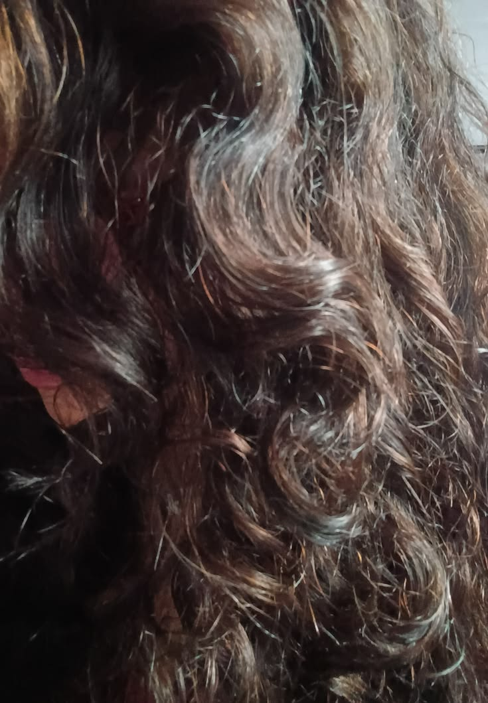
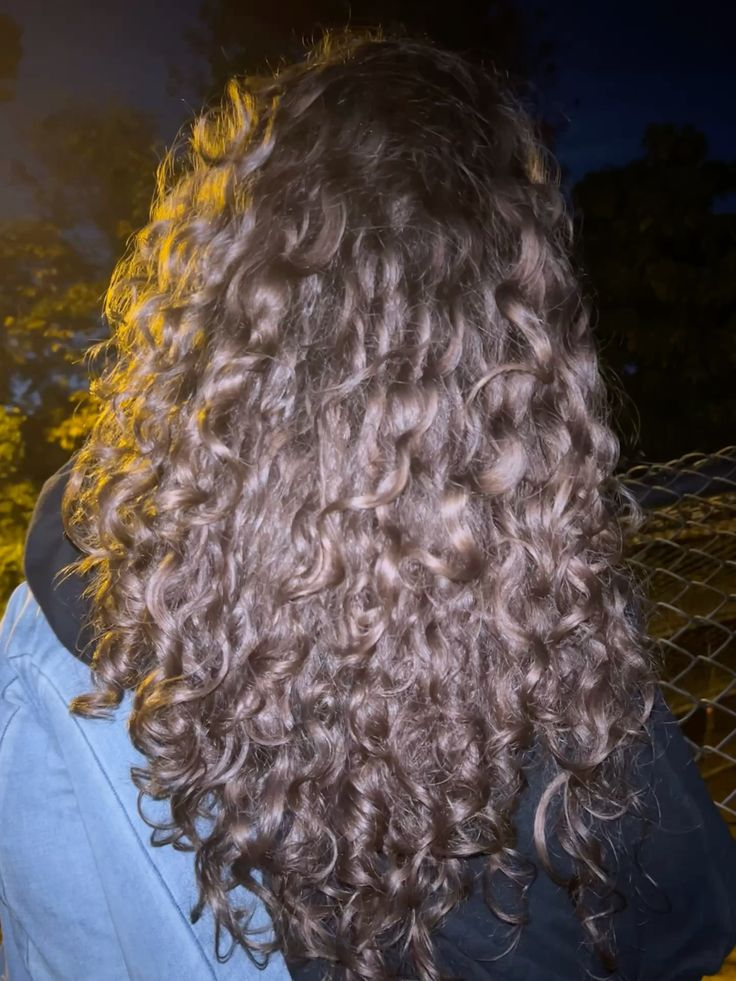

Ondulados
Características
Os cabelos ondulados são identificados pelas ondas em formato de "S", que ficam entre os fios lisos e os cacheados. Os famosos "lisos armados" ou "Lisos demais para sere cacheados e armados demais para serem lisos"!
Eles são classificados nas curvaturas:
2A
possui ondas bem suaves e pouco definidas
2B
apresentam ondas mais marcadas, principalmente do comprimento às pontas
2C
possui ondas mais fechadas e pode formar alguns cachos
Esse tipo de cabelo costuma ter bastante movimento, brilho e leveza, mas também pode sofrer com frizz, falta de definição e oleosidade na raiz, enquanto as pontas tendem a ser mais secas. Para manter os fios saudáveis, é recomendado utilizar produtos leves e hidratar frequentemente.


É recomendado finalizar o cabelo com técnicas que valorizem as ondas naturais, como fitagem ou amassar os fios com creme e gel. Com os cuidados adequados, o cabelo ondulado apresenta um aspecto natural, definido e cheio de movimento.
 Marisa Monte
Marisa Monte